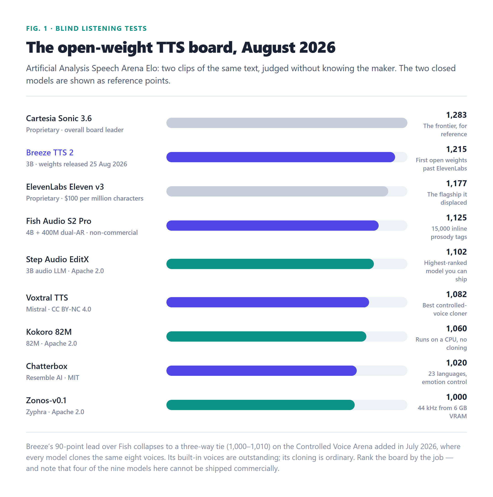
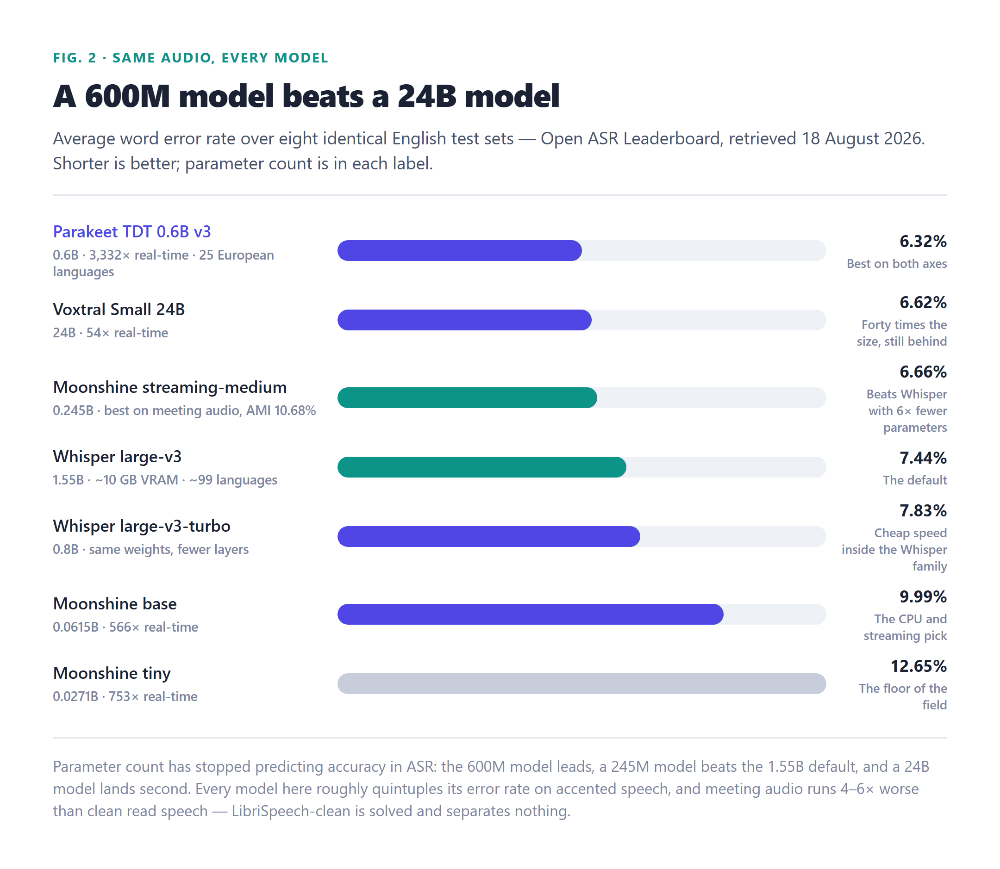

1,215
best open TTS Elo — past ElevenLabs v3
Open-weight voice crossed two lines this year. A 3B model now outranks ElevenLabs on a blind listening board, and a 600M-parameter transcriber beats Whisper large-v3 over identical audio. Here are the models that matter, what each is actually for, which licences you can ship under, and the commands to run them on hardware you already own.
Two model families, one privacy problem, and a year that changed the answer.
Voice is two problems wearing one word. Text-to-speech turns written text into audio: narration for a video, a voice for an agent, a read-aloud layer for an app. Speech-to-text runs it backwards: meetings, dictation, subtitles, call notes. For most of the last decade the practical answer to both was an API — pay per character on the way out, pay per hour on the way in, and send every sentence you ever wanted spoken, and every recording you own, to somebody else’s data centre.
That trade has two costs, and only one of them shows up on an invoice. The monetary one is easy to see: ElevenLabs charges $100 per million characters for its flagship, Eleven v3. The other cost is that dictated audio is the most personal data there is — contracts read aloud, medical notes, recordings of other people — and it leaves the building every time you use it. Both costs point the same direction: at some volume, running the model yourself stops being a hobby and becomes the obvious move.
What made 2026 the year to write this guide is that the quality argument evaporated. On blind listening tests, an open 3B model now beats the best closed voice on the market. On the standard English transcription benchmark, a 600M-parameter model beats the default that is eight times its size. Neither result was true a year ago.
A note on the rumour mill before the tables: there is no DeepSeek voice model — DeepSeek V4 is text-only — and no GLM voice model beyond GLM-TTS’s Chinese-English release. The Chinese-lab open voice models that actually exist are Qwen3-TTS and GLM-TTS, and both appear below.
One measures whether humans like the sound. The other measures whether the words are right.
Voice quality does not have one number, it has two, and they answer different questions.
The first is the Artificial Analysis Speech Arena, which is the useful signal for text-to-speech. Listeners hear two clips of the same sentence without knowing which model made each one and pick the better one; Elo accumulates from thousands of those blind votes. A vendor cannot train against it, because it measures whether a human prefers the sound, not whether a metric went up. There are now two boards: the main Provider Voices arena, where each model competes with its own built-in voices, and the Controlled Voice arena added in July 2026, which hands every model the same eight cloned voices so that only the cloning is being compared. Chapter 3 shows why that split changes the ranking.
The second is the Hugging Face Open ASR Leaderboard, which is the useful signal for transcription. Every model runs over the same eight English test sets in one harness, and the two columns that matter are word error rate (WER, lower is better) and real-time factor (RTFx, how many seconds of audio it transcribes per second of compute, higher is better). Its long-form benchmark adds accented and dialect speech, and its multilingual benchmark covers German, French, Italian, Spanish and Portuguese. This is also the only table in this article whose numbers we did not have to take on trust from a vendor — they come from the leaderboard’s own result files.
Fifteen text-to-speech models, ranked by blind listening tests, with the licence in the same row.
Here is the board as it stood in late August 2026. The two closed models are shown as reference points, because the interesting fact about this table is where the open weights sit relative to them.
| Model | Elo | Licence | Known for |
|---|---|---|---|
| Cartesia Sonic 3.6 (closed, reference) | 1,283 | Closed | Overall board leader; the gap to open weights is now 68 points, down from 118 in July |
| Breeze TTS 2 (BreezeBlue, 3B) | 1,215 | Research — non-commercial | First open weights past ElevenLabs; cloning, voice design and voice direction; weights published 25 Aug 2026 |
| ElevenLabs Eleven v3 (closed, reference) | 1,177 | Closed | $100 per million characters |
| Fish Audio S2 Pro (4B + 400M) | 1,125 | Research — non-commercial | 15,000 inline prosody tags, 80+ languages, released 9 Mar 2026 |
| Step Audio EditX (StepFun, 3B) | 1,102 | Apache 2.0 | Highest-ranked model you can ship; edit emotion in token space; 14+ emotions, 30+ styles |
| Voxtral TTS (Mistral) | 1,082 | CC BY-NC 4.0 | 3-second cloning; first place on the Controlled Voice board (1,010) |
| Magpie-Multilingual 357M (NVIDIA) | 1,066 | NVIDIA Open Model | Nine languages in 357M parameters |
| Kokoro 82M v1.0 (hexgrad) | 1,060 | Apache 2.0 | Runs on a laptop CPU, fixed voice bank, no cloning |
| Maya1 (Maya Research) | 1,045 | Apache 2.0 | Design a speaker from a written description, no reference audio |
| Higgs Audio V3 (Boson AI) | 1,042 | Research — non-commercial | 100+ languages with published word error rates |
| Chatterbox (Resemble AI) | 1,020 | MIT | Cloning from short reference audio, emotion control, 23 languages |
| Zonos-v0.1 (Zyphra) | 1,000 | Apache 2.0 | 44 kHz output from 6 GB of VRAM |
| Qwen3-TTS (Alibaba) | not yet scored | Apache 2.0 | 0.6B and 1.7B sizes, 10 languages, 5M+ downloads |
| VoxCPM2 (OpenBMB) | not yet scored | Apache 2.0 | 2B, 30 languages, 48 kHz, runs on a CPU |
| GLM-TTS (Z.ai) | not yet scored | MIT | Chinese/English, 0.89 CER on its own evaluation |

Three readings of that table are worth having before the licences. Size has stopped predicting quality: Kokoro is 82M parameters and sits sixth, ahead of models fifty times larger, while NVIDIA’s 357M Magpie outranks it. The trillion-parameter arms race that defines open-weight language models is simply not happening in speech. The leader’s lead is partly its voices: on the Controlled Voice arena, where everyone clones the same eight voices, Breeze’s 90-point margin becomes a three-way tie at 1,000–1,010 — its built-in voices are excellent, its cloning ordinary. And the frontier is still ahead: closed Cartesia Sonic 3.6 tops the overall board at 1,283, a 68-point gap over the best open weights where it was 118 in July. Open is catching, in public, one release at a time.
The word “open-source” appears on products whose weights you may not legally ship.
This is the part of the voice market that got worse over the summer of 2026, and it is where teams get hurt. The weights licence and the code licence are frequently different, the paper licence is frequently different from both, and the product page’s headline is frequently different from all three.
| Tier | Models | What it means |
|---|---|---|
| Ship it | Step Audio EditX, Kokoro, Maya1, Zonos, Qwen3-TTS, VoxCPM2 (Apache 2.0); Chatterbox, GLM-TTS (MIT) | Commercial use permitted by the weights licence itself. Check NVIDIA’s Open Model terms for Magpie before shipping. |
| Research only | Breeze TTS 2, Fish Audio S2 Pro, Higgs Audio V3 (research licences); Voxtral TTS (CC BY-NC 4.0); XTTS v2 (CPML) | Weights are downloadable and runnable, commercial use needs written authorisation. Breeze’s inference code is Apache 2.0 — that covers the code, not the weights. |
| Withdrawn | VibeVoice 7B (Microsoft) | Scores 969 and was released under MIT — a licence that has since been withdrawn. Treat any copy you find as unlicensed. |
There is a matching trap one chapter down in speech-to-text: Moonshine’s English weights are permissive, but its non-English weights are non-commercial above $1M revenue. A transcription product that quietly adds a second language can cross a licence line without ever changing models.
Eight identical English test sets, one harness, twelve models — and a scaling story that broke.
For transcription the question is not whether people like the sound, it is whether the words are right. The table below is the English short-form benchmark from the Open ASR Leaderboard: average word error rate across eight test sets, with real-time factor alongside. Lower WER is better; higher RTFx is faster.
| Model | Params | Avg WER | RTFx | Notes |
|---|---|---|---|---|
| NVIDIA Parakeet TDT 0.6B v3 | 0.6B | 6.32 | 3,333 | Best on both axes; 25 European languages; token-and-duration transducer head |
| Mistral Voxtral Small 24B | 24B | 6.62 | 54 | Forty times Parakeet’s size, still behind; 8 named languages |
| Moonshine streaming-medium | 0.245B | 6.66 | — | Beats Whisper with 6× fewer parameters; best on meeting audio (AMI 10.68) |
| Mistral Voxtral Mini 3B | 4.7B | 7.05 | 110 | Audio-native LLM — also answers questions about the audio; ~9.5 GB |
| OpenAI Whisper large-v3 | 1.55B | 7.44 | 146 | The default; ~99 languages; wants ~10 GB of VRAM |
| Whisper large-v3-turbo | 0.8B | 7.83 | 200 | Same weights, fewer layers — the cheap speed move inside the family |
| Moonshine base | 0.0615B | 9.99 | 566 | The CPU and streaming pick; 61.5M parameters |
| Moonshine tiny | 0.0271B | 12.65 | 753 | The floor of the field — and still transcribes in real time |
| faster-whisper (large-v3 weights) | 1.55B | 7.44* | — | CTranslate2 reimplementation: 16 s against stock’s 2 m 23 s on a 13-minute file at int8 (vendor benchmark) |
| NVIDIA Canary-Qwen 2.5B | 2.5B | — | — | English-accuracy leader on public leaderboards; transcription plus translation in one model |
| Qwen3-ASR (Alibaba) | — | — | — | Mandarin and multilingual strength; the pick when traffic skews Asian |
| Vosk | tiny | — | — | Streams on a Raspberry Pi, 20+ languages, accuracy trails the field by a wide margin |
*faster-whisper runs the same weights as Whisper large-v3, so its accuracy is the row above’s — what changes is the runtime.

The section the ranking pages skip, because it requires looking past the average.
Every word-error rate in chapter 5 was measured on broadcast-register English. Real audio does not sound like that, and the penalty is not small. Compare each model’s score on TEDLIUM (professional talks) against CORAAL (a corpus of African American English), from the leaderboard’s long-form benchmark:
| Model | TEDLIUM WER | CORAAL WER | Penalty |
|---|---|---|---|
| Parakeet TDT 0.6B v3 | 2.77 | 15.57 | 5.6× |
| Whisper large-v3-turbo | 3.23 | 17.87 | 5.5× |
| Whisper large-v3 | 3.15 | 18.89 | 6.0× |
Roughly one word in six is wrong on dialect speech for the best model here, and the ordering flips when you remove that column: without CORAAL, Whisper large-v3 leads at 8.67 against Parakeet’s 9.10. Which model is better depends on whose voice you are transcribing. Four more failure modes belong on the same page:
A transcription model and a voice-agent engine are not the same product.
Chapter 5 ranked models on batch accuracy, which is the right axis for archives and the wrong axis for conversation. A live voice agent needs three things the benchmark does not measure: partial results while the user is still speaking, turn detection so it knows when they are done, and sub-second latency — a two-second pause reads as broken, whatever the final transcript says.
Vanilla Whisper fails the first requirement outright: it does not stream natively, and its chunking workarounds give you sentence-level latency at best. Vosk streams in real time on a Raspberry Pi but its accuracy trails the big models by a wide margin. The middle of the field — Parakeet, Canary, Qwen3-ASR — is transducer-based and naturally emits partials, but wiring one into a conversation still means owning turn detection yourself. Moonshine is the model actually built for the dictation case: 61.5M parameters, low latency, designed for the CPU path.
There is a fourth requirement that no open model satisfies today, and it is worth knowing about because it explains where the commercial edge is. A model transcribing cold has no idea what your agent just asked. If the agent asked for an order number, the transcription cannot be biased toward hearing digits. AssemblyAI published the counter-example: feeding their streaming model the agent’s side of the conversation cut word error rate by 10.2% across 20,000 voice-agent files and dropped error rates on critical utterances — emails, order numbers, names — from 26% to 9%. That is a vendor’s own benchmark of their own product, and it should be read as such; the underlying point stands, and it is the next gap for the open stack to close.
Two snippets that work on hardware you own, and the four serving paths worth knowing.
Everything in this article has a local install measured in minutes. Speech on the CPU first — Kokoro is 82M parameters, Apache 2.0, and needs no GPU at all:
# Kokoro: 82M parameters, Apache 2.0, CPU-only synthesis
pip install kokoro soundfile
from kokoro import KPipeline
import soundfile as sf
pipeline = KPipeline(lang_code='a') # 'a' = American English
for i, chunk in enumerate(pipeline('Voice models now run on the hardware you own.')):
sf.write(f'chunk-{i}.wav', chunk.audio, 24000) # 24 kHz outputTranscription through the Whisper weights, with the CTranslate2 runtime that makes stock Whisper bearable:
# faster-whisper: same large-v3 weights, int8, a fraction of the memory
pip install faster-whisper
from faster_whisper import WhisperModel
model = WhisperModel('large-v3', device='cuda', compute_type='int8')
segments, info = model.transcribe('meeting.mp3')
for segment in segments:
print(f'[{segment.start:6.1f}s] {segment.text}')For anything beyond a script, four serving paths cover the field. Kokoro-FastAPI is the fastest route to a working OpenAI-compatible speech endpoint. LocalAI has the broadest model coverage behind one API — point it at your model directory and speak the standard /v1/audio/speech route. vLLM-Omni is the production GPU serving path for the new generation of TTS models (Voxtral, Fish). llama.cpp-omni runs VoxCPM2 as GGUF on CPU, Metal, CUDA or Vulkan, with no PyTorch in the stack at all. On the transcription side, whisper.cpp plays the same role for people who want a binary and a model file instead of a Python environment.
Where self-hosting genuinely wins, and where the free model is a trap.
On the way out — speech synthesis — the arithmetic is stark. The best-value hosted open model runs about $0.70 per million characters; ElevenLabs charges $100 for its flagship. That is a 143× gap before you count the option of running it yourself, where the marginal character costs electricity. For narration, accessibility read-aloud, notifications and agent voices — all workloads where consistency beats novelty — a 143× margin is the difference between a feature and a budget line.
On the way in — transcription — the picture is more honest. Managed transcription sits around $0.21 per hour of audio for a current commercial model (AssemblyAI’s published rate), and the self-hosting argument has to survive three costs that never appear on a model card: GPUs that scale with traffic, the engineering time to add what the base model lacks — diarisation, language coverage, a chunking strategy — and the upgrades required every time the frontier moves, which in ASR it does every few months. The most common failure mode is a team self-hosting Whisper, discovering the total cost of ownership was not the budget they wrote down, and quietly moving back.
The shortest useful table in the article.
| If you want… | Use | Why |
|---|---|---|
| Narration with no GPU at all | Kokoro 82M | 1,060 Elo, Apache 2.0, laptop CPU, no cloning |
| A commercial voice product, shipping now | Step Audio EditX | Highest Elo you can ship (Apache 2.0); emotion editing in token space |
| Cloned narrator, non-commercial | Voxtral TTS | First on the Controlled Voice board; CC BY-NC limits it to non-commercial use |
| Cloned voice, commercial | Chatterbox | MIT, emotion control, 23 languages |
| A voice described in words, not sampled | Maya1 | Voice design from text, Apache 2.0 |
| Emotion-rich short clips, Apache only | Step Audio EditX or Qwen3-TTS | EditX for performance control; Qwen3-TTS for 10 languages at 0.6B/1.7B |
| English batch transcription on a GPU | Parakeet TDT 0.6B v3 | 6.32% WER at 3,333× real-time; 25 European languages |
| The 99-language default | Whisper large-v3 via faster-whisper | Only model with broad coverage; run the CTranslate2 runtime, not stock |
| Dictation, CPU or Raspberry Pi | Moonshine base | 61.5M parameters, built for streaming, 566× real-time |
| Meetings with overlapping speakers | Moonshine streaming-medium + WhisperX | Best AMI score in the field (10.68); diarisation layered on top |
| Questions about the audio, not a transcript | Voxtral Mini 3B | Audio-native LLM: transcribe and interrogate in one model |
| Mandarin-first traffic | Qwen3-ASR | Strong on Asian languages where Parakeet produces nothing usable |
The five questions that come up every time.
On blind listening tests, Breeze TTS 2 leads open weights at 1,215 Elo and is the first open model to outrank ElevenLabs Eleven v3. Its weights are non-commercial, so the highest-ranked model you can ship is Step Audio EditX at 1,102 under Apache 2.0. If you want a voice with no GPU at all, Kokoro 82M scores 1,060 on a laptop CPU.
Depends entirely on the weights licence, not the marketing. Ship-safe: Step Audio EditX and Qwen3-TTS (Apache 2.0), Kokoro and Maya1 (Apache 2.0), Chatterbox and GLM-TTS (MIT), Zonos (Apache 2.0). Non-commercial: Breeze TTS 2, Fish Audio S2 Pro and Higgs Audio V3 (research licences), Voxtral TTS (CC BY-NC), XTTS v2 (CPML). Microsoft even withdrew VibeVoice’s MIT licence.
Not on English averages. On eight identical English test sets, NVIDIA Parakeet TDT 0.6B v3 scores 6.32% word error rate against Whisper large-v3’s 7.44%, and a 245M-parameter Moonshine model beats Whisper with six times fewer parameters. Whisper remains the right default when you need its roughly 99 languages — Parakeet covers 25 European languages only — and you should run it through faster-whisper rather than stock.
No. Kokoro 82M and VoxCPM2 both generate speech on a CPU, and Moonshine and Vosk transcribe on a CPU or a Raspberry Pi. A GPU only changes throughput: batch transcription of an archive, or serving a real-time voice endpoint where the bigger models and their streaming builds live.
Because live conversation is not the test set. Vanilla Whisper does not stream and hallucinates during silence, accent penalties run five to six times the headline word error rate, and no open model knows what your agent just said — transcription is always cold. Real-time voice needs turn detection and partial results on top of the model, which is why the streaming story matters more than the leaderboard position.
Where each claim came from.
| # | Source | Used for |
|---|---|---|
| 1 | Artificial Analysis Speech Arena leaderboards (Provider Voices and Controlled Voice), scores read late August 2026, via Pinggy’s self-hosted TTS roundup (26 Aug 2026) | Every Elo figure in chapter 3 and Fig. 1; the 68-point open/closed gap; the Controlled Voice reshuffle |
| 2 | Pinggy, Best Open Source Self-Hosted Text-to-Speech Models in 2026 (26 Aug 2026) | Licences and release dates per model; Breeze’s VRAM floors (7.7 GiB eager / 12 GB stated minimum); the $0.70-vs-$100 hosted comparison; the serving tools in chapter 8 |
| 3 | huggingface/open_asr_leaderboard, en_shortform.csv, en_longform.csv and multilingual.csv, retrieved 18 Aug 2026, via LocalAIMaster’s one-file comparison (13 Sep 2026) | Chapter 5’s WER and RTFx table, Fig. 2, the CORAAL penalty table, the multilingual averages and the “without CORAAL” flip |
| 4 | AssemblyAI, Top 8 open source STT options for voice applications in 2026 (30 Sep 2026) | Model roles in chapter 5 (Canary, Qwen3-ASR, Vosk, Wav2Vec2), the streaming requirements in chapter 7, and the agent-context figures explicitly labelled as the vendor’s own benchmark |
| 5 | SYSTRAN faster-whisper benchmark and repository status | The int8 16 s vs 2 m 23 s comparison on the 13-minute test file (vendor benchmark) and the November 2025 maintenance warning |
| 6 | Model cards and repositories: hexgrad/kokoro, resemble-ai/chatterbox, Zyphra/Zonos, StepFun, Mistral AI (Voxtral), Qwen (Qwen3-TTS), Zhipu (GLM-TTS), OpenBMB (VoxCPM2), Moonshine (craftlm) | Parameter counts, licences, language lists, Moonshine’s $1M non-English clause, and the sample commands in chapter 8 |
| 7 | NVIDIA model cards and NeMo documentation (Parakeet TDT, Canary-Qwen, Magpie) | The transducer architecture explanation, Parakeet’s language set and long-file limits (vendor figures), Magpie’s licence |
| 8 | openai/whisper README and model card | Whisper large-v3’s 1,550M parameters, ~99 languages, and the 30-second segmentation that explains its silence hallucinations |
| 9 | This site, Top Embedding, Reranker & OCR Models 2026 | The sibling infrastructure ranking this guide is modelled on |
| 10 | This site, Local Image Generation Models 2026 | The other half of the local modality stack — same licence-first method, different board |
Assembled 6 October 2026. Arena Elo moves with every batch of votes; the scores here are from late August 2026 and the board will have shifted. ASR figures come from the Open ASR Leaderboard’s own result files retrieved 18 August 2026. Where a number is a vendor’s claim — Parakeet’s long-file limits, faster-whisper’s speed ratio, AssemblyAI’s context gains — it is labelled as one. Rankings are ours; the licences are the projects’.
Tell me what you’re working on and I’ll help you work through it — where you got stuck, what you’re trying to build, which model to pick. Your message arrives with this article attached, so I’ll know exactly what you’re reading.